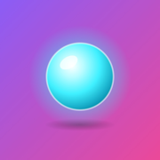

Installez Ava
sur votre écran d'accueil.
Trois minutes, aucune DSI. Le jeu s'installe comme une vraie app : une icône, le plein écran, et il se relance même sans réseau.
…/jouer/
Ouvrir le jeu
Nouveau : la vraie app iPhone et iPad, en bêta. Installez d'abord l'app TestFlight d'Apple, puis ouvrez ce lien sur l'iPhone. Elle se met à jour toute seule.
Rejoindre la bêta TestFlightOu, sans TestFlight, installez la web app :
Ouvrez le jeu dans Safari. Touchez « Ouvrir le jeu » ci-dessus : c'est le jeu qu'on installe, pas cette page.Arrivé par WhatsApp, Messenger ou Instagram ? Touchez « ⋯ » puis « Ouvrir dans Safari » (ou « Ouvrir dans le navigateur »).
🧭Touchez le bouton Partager. En bas de l'écran sur iPhone, en haut à droite sur iPad.Avec iOS 26, il se cache parfois derrière « ⋯ », en bas à droite.
Choisissez « Sur l'écran d'accueil ». Faites défiler la liste vers le bas si besoin.
Laissez « Ouvrir comme app web » activé, puis touchez Ajouter.
AjouterLancez Inhumaines depuis l'écran d'accueil, téléphone à l'horizontale. Bienvenue chez Synergie.

Ouvrez le jeu dans Chrome. Touchez « Ouvrir le jeu » ci-dessus : c'est le jeu qu'on installe, pas cette page.Arrivé par une appli de messagerie ? Menu « ⋮ » puis « Ouvrir dans Chrome ».
🌐Touchez le menu « ⋮ » en haut à droite.
⋮Choisissez « Installer l'appli ».Selon la version : « Ajouter à l'écran d'accueil », puis « Installer ». Sur Samsung Internet : menu « ≡ », « Ajouter la page à », « Écran d'accueil ».
Confirmez, puis lancez Inhumaines depuis l'écran d'accueil, téléphone à l'horizontale.
Ouvrez le jeu avec le bouton « Ouvrir le jeu » ci-dessus.
🖥️Chrome ou Edge : cliquez sur l'icône d'installation à droite de la barre d'adresse, puis « Installer ».Sinon : menu « ⋮ », « Caster, enregistrer et partager », « Installer la page en tant qu'appli ».
Safari sur Mac : menu « Fichier », puis « Ajouter au Dock ».
FichierFirefox : pas d'installation, mais le jeu marche très bien dans un onglet. Passez en plein écran avec F11 (⌃⌘F sur Mac).
🦊
Questions fréquentes
C'est vraiment gratuit ?
Oui. Pas de compte, pas de pub, rien n'est envoyé nulle part. Synergie n'a même pas réussi à monétiser votre âme.
Où est sauvegardée ma partie ?
Sur votre appareil, automatiquement. Sur iPhone, l'app installée a sa propre mémoire : une partie commencée dans Safari ne la suit pas. Installez d'abord, jouez ensuite.
Ça marche sans réseau ?
Une fois le jeu lancé une première fois, oui : il se relance hors ligne. La musique et la voix d'Ava ont besoin du réseau pour se charger.
Comment avoir la dernière version ?
Rien à faire : relancez l'app avec du réseau, elle se met à jour toute seule.
Il y a une version en anglais ?
Yes. Dans le jeu, ouvrez Réglages ⚙️ et choisissez English. Ava vous parlera dans les deux langues.
Comment désinstaller ?
Appui long sur l'icône, puis « Supprimer l'app » (ou « Désinstaller »). Ava ne le prendra pas personnellement. Elle le notera, c'est tout.
Partagez avec un collègue
Il a lui aussi droit à son premier jour chez Synergie. Le jeu dure 30 jours ouvrés, il a 6 fins, et Ava sera désactivée le 14 décembre.